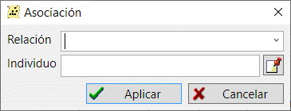

Asociaciones (relaciones) almacenan referencias dedicadas de una persona a otras. Estas referencias recogen vínculos familiares o sociales específicos.
Por ejemplo, resulta práctico almacenar una referencia a un padrino como asociación. También puede utilizar asociaciones para destacar amigos y otras relaciones, que no puede definir como lazos de sangre (madre/padre/hijo/hermano/hermana).
Las asociaciones se añaden en la pestaña con el mismo nombre del cuadro de diálogo de edición de personas.

Ver también: Persona.